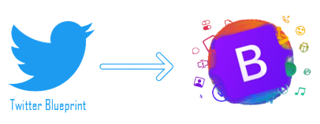

Historia y versiones
Las distintas versiones de Bootstrap y sus enlaces de descarga se pueden encontrar haciendo click aquí.
Inicio
Después de unos meses de desarrollo por parte de un pequeño grupo, muchos desarrolladores de Twitter comenzaron a contribuir al proyecto como parte de una haackweek, una semana estilo hackatón para el equipo de desarrollo de Twitter. Se renombró de Twitter Blueprint a Bootstrap y se lanzó como proyecto de código abierto el 19 de agosto de 2011. Mark Otto, Jacob Thornton y un pequeño grupo de desarrolladores principales, así como una gran comunidad de contribuyentes.

Bootstrap 2 y 3
El 31 de enero de 2012, se lanzó Bootstrap 2, que agregó soporte integrado para glyphicons, varios componentes nuevos, así como cambios en muchos de los componentes existentes. Esta versión admite el diseño web receptivo, lo que significa que el diseño de las páginas web se ajusta dinámicamente, teniendo en cuenta las características del dispositivo utilizado (ya sea de escritorio, tableta o teléfono móvil). La siguiente versión principal, Bootstrap 3, fue lanzada el 19 de agosto de 2013. Rediseñó los componentes para usar un diseño plano y un primer enfoque móvil.
Bootstrap 4
Mark Otto anunció Bootstrap 4 el 29 de octubre de 2014. La primera versión alfa de Bootstrap 4 se lanzó el 19 de agosto de 2015. La primera versión beta se lanzó el 10 de agosto de 2017. Mark suspendió el trabajo en Bootstrap 3 el 6 de septiembre de 2016 para liberar tiempo para trabajar en Bootstrap 4. Bootstrap 4 se finalizó el 18 de enero de 2018.
Se puede ver el desarrollo de Bootstrap 4 a través del siguiente enlace a GitHub: Repositorio oficial Bootstrap 4
Los cambios más importantes respecto a las versiones anteriores son:
- Reescritura importante del código
- Reemplazo de Less con Sass
- Adición de Reboot, una colección de cambios CSS específicos del elemento en un solo archivo, basado en Normalize
- Dejar de admitir IE8, IE9 e iOS 6
- Compatibilidad con CSS Flexible Box
- Agregar opciones de personalización de navegación
- Adición de utilidades de tamaño y espaciado sensibles
- Cambiar de la unidad de píxeles en CSS a root ems
- Aumento del tamaño de fuente global de 14px a 16px para mejorar la legibilidad
- Soltar los componentes del panel, la miniatura, el localizador y el pozo
- Soltar la fuente del icono Glyphicons
- Gran número [cuantificar] de clases de servicios públicos
- Estilo de formulario, botones, menús desplegables, objetos multimedia y clases de imágenes mejorados
Bootstrap 4 es compatible con las últimas versiones de Google Chrome, Firefox, Internet Explorer, Opera, y Safari.
Bootstrap 5
La versión 5 de Bootstrap fue anunciada por Mark Otto el 21 de diciembre de 2018 y, luego de 3 versiones alfas y 3 betas, fue lanzada oficialmente el 5 de mayo de 2021. Actualmente, la versión de descarga es Bootstrap v5.2.1.
Se puede ver el desarrollo de Bootstrap 5 a través del siguiente enlace a GitHub: Repositorio oficial Bootstrap 5
Los nuevos cambios y agregados fueron los siguientes:
- Nuevo menú de componentes "offcanvas".
- Se pasa de jQuery a Vanilla JavaScript.
- Migración de la documentación de Jekyll a Hugo.
- Se retira el soporte para Internet Explorer 10 y 11, Microsoft Edge Legacy, y versiones inferiores a: Firefox 60, Safari 10 y Chrome 60.
- El testing de infraestructura pasa de QUnit a Jasmine.
- Inclusión de un nuevo set de iconos SVG y nuevas propiedades de CSS.
- API mejorada.
- Mejora del sistema de cuadrícula.
- Creación de la sección de formularios, con nuevos formularios incluidos.
- Soporte RTL (right-to-left) para sistemas de escritura de derecha a izquierda.
- Implementación de Dart Sass.
Es la versión utilizada actualmente.
Bootstrap 5 Alpha
Bootstrap 5 Alpha se lanzó oficialmente el 16 de junio de 2020 y, actualmente, existen 3 versiones.
Bootstrap 5 Beta
Bootstrap 5 Beta se lanzó oficialmente el 7 de febrero de 2021, tres semanas después del lanzamiento de la tercera alfa. La versión 5 Beta 2 es actualmente la última versión del paquete.